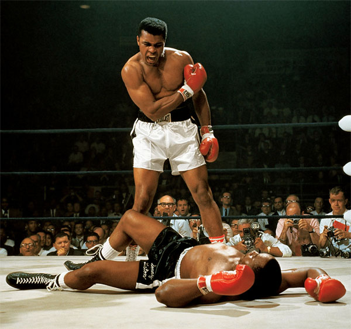

Deportista Olimpico
Muhammad Ali
Biografia
(Louisville, 1942 - Scottsdale, 2016) Boxeador estadounidense considerado el más completo de la historia. La historia de Muhammad Alí, nacido Cassius Clay, es la historia de una vocación, aupada por unas extraordinarias condiciones físicas y una inusual velocidad de reflejos, tanto de piernas como de puños. A los doce años conocía ya la soledad del cuadrilátero, y a base de trabajo diario adquirió una técnica prodigiosa.
Eventos Importantes
- Olimpíadas de Roma 1960. Medalla de oro de semipesados
- En 1964 gano el titulo mundial de pesos pesados.
- En 1967 fue llamado a la guerra y al no ir fue a pricion por 5 años.
- Al terminar su condena recuperó su título en 1974.
- En 1980 disputó su último combate, en el que perdio su titulo mundial.

Familia
Cónyuge: Lonnie Ali
Hijos:
- Muhammad Ali Jr
- Laila Ali
- Maryum Ali
- Rasheda Ali
- Asaad Amin
- Hana Yasmeen Ali
- Khaliah Ali
- Miya Ali